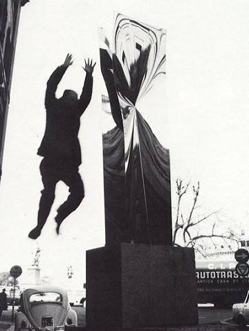
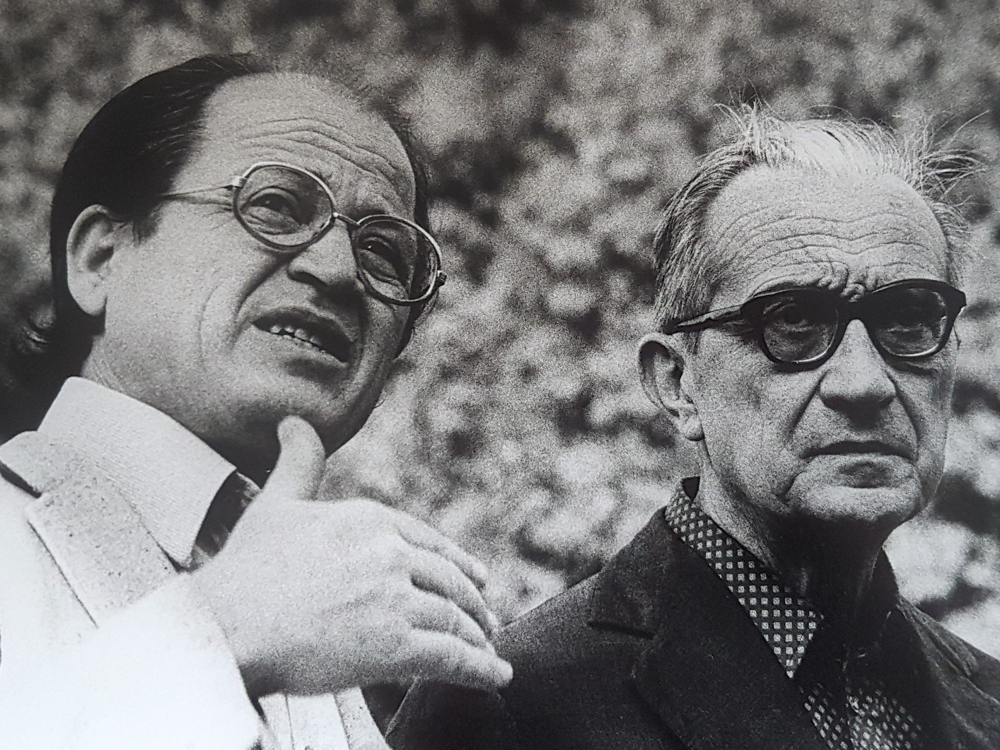
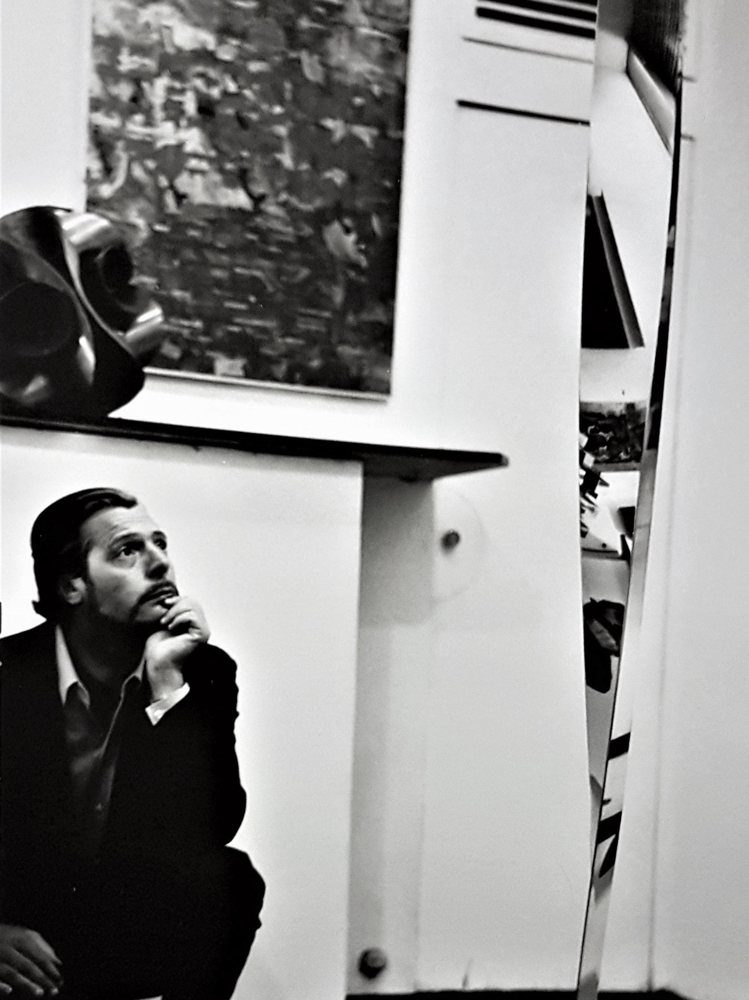
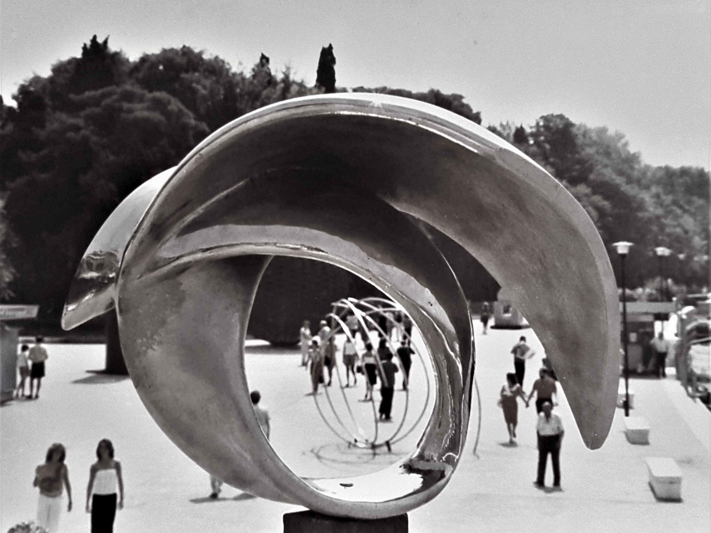
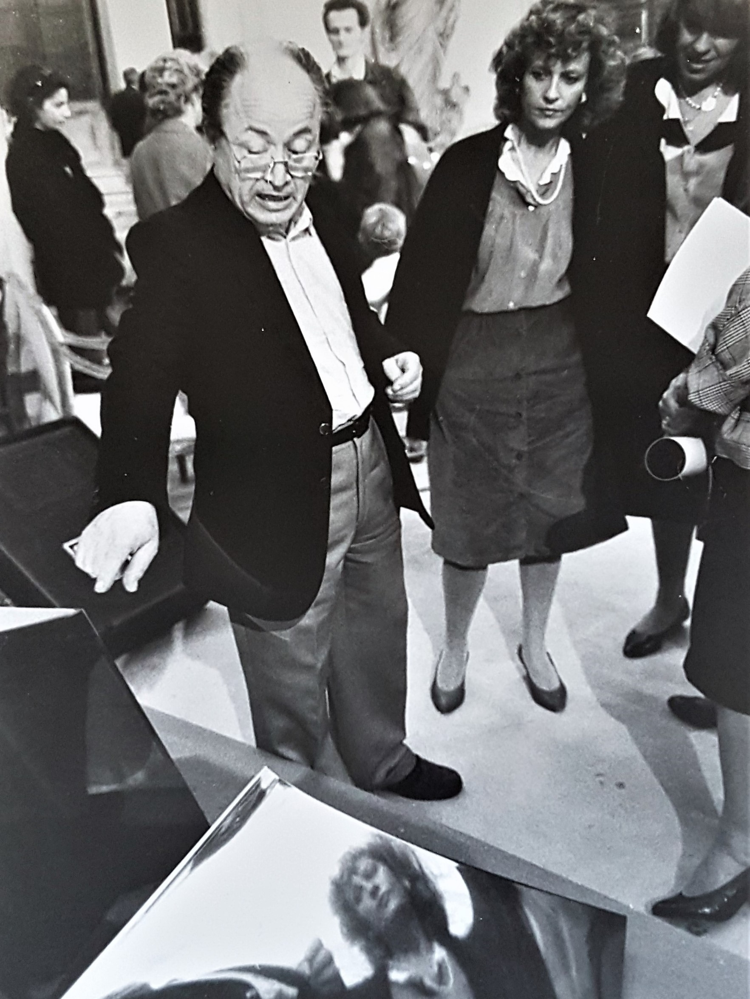

biografia storico-artistica

Attilio Pierelli salta dalla sua scultura Monumenti Inox,Roma (1968)
Attilio Pierelli nasce il 10 aprile 1924 a Sasso di Serra San Quirico (AN). A soli dodici anni, si trasferisce a Roma con la famiglia, iniziando a lavorare come apprendista in varie botteghe artigiane; e sarà tra queste che, specializzandosi nel mestiere di odontotecnico (1939), aumenterà e maturerà le sue innate capacità di manipolazione della materia. Autodidatta, destreggiandosi tra lo studio e il lavoro, a partire dagli anni Cinquanta Pierelli comincia ad avvicinarsi spontaneamente all’arte scultorea. I suoi primi lavori, risalenti al 1958 e dunque al periodo che l’artista stesso denominerà Barlumi saranno costituiti dall’unione-sovrapposizione di lastre di vetro bugnato e fogli di lana di vetro. Spinto da quelle che lui amava definire “primitive intuizioni”, Pierelli riuscì a trasformare un piacevole passatempo in vera e propria necessità creativa, entrando in contatto con i personaggi più importanti dell’ambiente artistico, romano e non, del tempo. Conosce e frequenta così l’intellettuale Emilio Villa, i critici d’arte Giulio Carlo Argan e Maurizio Fagiolo dell'Arco, i galleristi Gaspero del Corso e Irene Brin e la storica direttrice della Galleria Nazionale d'Arte Moderna di Roma Palma Bucarelli. Tra gli incontri che incideranno notevolmente sul percorso storico-artistico di Attilio Pierelli ricordiamo anche quello con l’artista Lucio Fontana, l’architetto Carlo Scarpa e l’industriale del mobile Dino Gavina, conoscenze che gli permetteranno di conoscere la realtà avanguardistica del disegno industriale. Nel 1963 viene allestita, presso Galleria S. Marco di Roma, la prima mostra personale dell’emergente scultore Planches Aluminium, e sempre nel medesimo anno inizia a realizzare gioielli.
Affascinato dalla scienza, dalla filosofia e dalla cosmologia, l’attività artistica di Attilio Pierelli comincia a strutturarsi fin da subito come una vera e propria ricerca spaziale: nelle prime opere viene indagato uno spazio simbolico, celato da superfici che permettono soltanto di intravedere una realtà nascosta, ma lo studio delle scoperte sul dominio spazio-temporale avvenute nel campo della fisica, lo conducono presto alla creazione delle sue prime sculture speculari in alluminio (periodo Forma e specularità). Delineandosi chiaramente in Pierelli il desiderio di coniugare il rigore scientifico all’inventiva artistica, le sue nuove indagini lo conducono ora ad abbandonare materiali duri come il vetro o leggeri come l’alluminio, che tentavano semplicemente di suggerire spazi e piani illusori, a favore di un elemento caratterizzato da doti più resistenti e da una lucentezza capace di catturare i molteplici riflessi della realtà. L’acciaio inox, rispondendo perfettamente a tutte queste esigenze, diventa così l’elemento protagonista della sua poetica; una consacrazione che verrà celebrata con la personale Monumenti Inox alla Galleria L’Obelisco di Roma, il 10 gennaio del 1966.

Attilio Pierelli con Giulio Carlo Argan durante la mostra Luce e geometriaRoma (1975)

Marcello Mastroianni alla mostra Monumenti InoxRoma (1966)
L’eco del successo appena riscosso dalla mostra dona a Pierelli l’opportunità d’essere conosciuto e richiesto anche all’estero, ottenendo una fama tale da attirare l’attenzione di Virginia Zabriskie, che nello stesso anno deciderà d’ospitare una personale dell’artista presso la propria galleria di New York. Interessandosi alla multidisciplinarietà dell’arte, Pierelli inizia contemporaneamente a dedicarsi al misterioso e singolare rapporto che intercorre fra suono e scultura (periodo Suono e specularità). Risalgono infatti allo stesso anno le partecipazioni ai concerti organizzati da alcuni esponenti dell’avanguardistico gruppo di Nuova Consonanza, all’interno dei quali la libera sovrapposizione di scultura, elettroacustica e gesto vocale-musicale portò alla nascita della Iª Esecuzione mondiale del concerto di scultura, in occasione del Festival dei due mondi di Spoleto. Nel 1974 Pierelli giunge alla creazione della sua opera più importante, l’Ipercubo: scultura dalla forma iperspaziale che ci permette di vedere, nel nostro spazio a tre dimensioni, la proiezione di un solido geometrico esistente solamente nella quarta dimensione e dunque a noi sensorialmente inaccessibile. L’emblematica figura, che racchiuderà in sé il periodo di ricerca più fruttuoso e innovativo dello scultore (periodo Luce e Geometria), verrà esposta per la prima volta alla Galleria L'Obelisco, in occasione della mostra collettiva De Mathematica. Da questo momento in poi Pierelli incentrerà la propria arte sulla tematica dell’iperspazio e delle geometrie curve non-euclidee, pubblicando libri ed articoli e tenendo conferenze internazionali e interdisciplinari sui temi arte e scienza, arte e psicologia, arte e società.
Nel 1976 il comune di Riano commissiona a Pierelli il monumento di cinque metri dedicato a Giacomo Matteotti, mentre l'opera Quadrifoglio verrà inserita permanentemente all’interno del Nuovo Palazzo del Consiglio d’Europa di Strasburgo nel 1977.
Con l’esposizione personale del 1985 tenuta presso la Galleria MR di Roma, lo scultore presenterà poi la più prestigiosa delle sue produzioni orafe, la scultura in argento che verrà poi riconosciuta dalla critica scientifica come la fedele materializzazione del concetto astrofisico di “black hole”: T.E.S.T (Trascinamento di Eventi Spazio Temporali). Le numerose ricerche che Pierelli effettuò sia nel campo della visualizzazione del concetto di spazio relativo alla quarta dimensione geometrica che nella scoperta di tutti quei rapporti che intercorrono fra arte e scienza, unitamente alla creazione di opere rivelatrici delle più avanzate conoscenze ottenute in astrofisica, gli valsero l’invito alla 42sima Biennale di Venezia del 1986, incentrata proprio sul tema Arte e Scienza. La riproduzione in scala ridotta di T.E.S.T. verrà inoltre utilizzata come “Oscar” per il premio che viene assegnato ogni tre anni alla più importante scoperta ottenuta in campo astrofisico, il Marcel Grossmann Meeting. I vari studi condotti nel campo della topologia spinsero lo scultore, sempre nel 1986, alla creazione dei Nodi: oggetti chiusi nello spazio tridimensionale, costituiti da curve semplici e caratterizzati da superfici estremali (periodo Teoria degli Universi).

T.E.S.T. alla XLII Biennale Internazionale d'Arte e ScienzaVenezia, (1986)

Attilio Pierelli all'inagurazione del DimensionalismoRoma (1987)
Nel 1987 Pierelli fonda a Roma il Movimento Artistico Internazionale Dimensionalista: arte avanzata interdisciplinare con una mostra al Casino dell’Aurora Pallavicini di Roma, continuando comunque a partecipare alle più importanti nazionali ed internazionali del momento: nel 1990 espone alla Galerie Landesgirokasse di Stoccarda e l’anno successivo al Museum of Modern Art di Kyoto. Nel 1991 lo scultore acquista a Bomarzo (VT) il piano terra di un antico palazzo del ‘500 all’interno del quale decide di fondare, due anni dopo, il Museo di Ipersculture, che rientrerà nel progetto di rete museale di Arte Contemporanea promosso e diretto dalla cattedra di Storia dell’Arte Contemporanea dell’Università "La Sapienza" di Roma della prof.ssa Simonetta Lux e che resterà aperto fino al luglio del 2012. Nel 1997 l’artista effettua una donazione a favore dell’Università degli studi Roma Tor Vergata e ben sette delle sue monumentali sculture vengono assegnate alle varie facoltà di Economia, Ingegneria, Medicina e Chirurgia, Scienze Matematiche Fisiche e Naturali. Agli inizi del 1998 acquisisce i diritti sull’immagine dell’ipercubo tramite la registrazione del copyright. Attilio Pierelli muore a Roma il 1° gennaio del 2013. Tre anni dopo la sua morte, 20 delle oltre 100 opere che andarono a formare la collezione del Museo di Sculture Iperspaziali di Bomarzo vengono accolte ed esposte nei suggestivi spazi di Villa Magherini Graziani di Celalba, nel comune di San Giustino (PG). Ed è così che tale preziosa raccolta trova, a partire dal 2016, la sua nuova “sede permanente” e, oltre ad arricchire il patrimonio storico artistico contemporaneo della regione Umbria, diventerà d’ora in poi il luogo consacrato alla conoscenza di uno degli artisti più rivoluzionari del secondo Novecento.
“Come si inizia a fare arte e soprattutto perché è difficile da spiegare.
Per me è stata una necessità determinata da un'ipersensibilità
verso i materiali e la loro forma;
quasi uno stato di ipnosi indotto dal rapporto con i materiali
che di volta in volta attraevano ed attraggono il mio interesse.
Nello stato di lieve ipnosi,
che si verifica forse in ogni caso di meditazione più o meno profonda,
si acuisce quel fenomeno strano che si chiama intuizione”